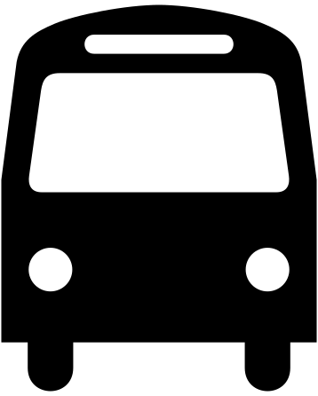
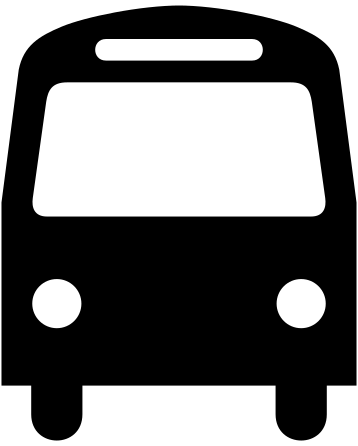
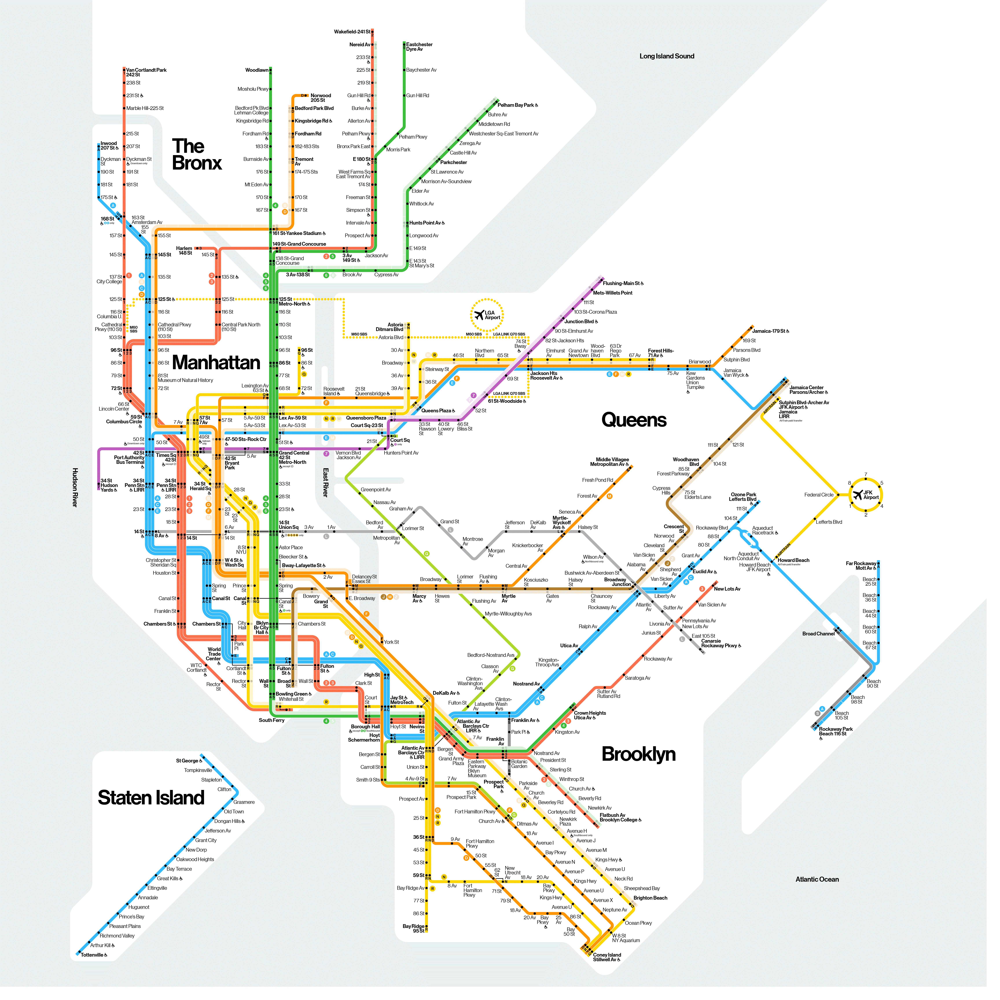

The Weekender
Subway Lines Select one for service details
DeKalb Av
Weekend Service Notice Select one for details
- TRACK MAINTENANCE 10:45 PM Fri, Oct 12 to 5 AM Mon, Oct 15 Norwood-bound
 trains skip 25 St, Prospect Av, 4 Av-9 St, Union St and DeKalb Av in Brooklyn
trains skip 25 St, Prospect Av, 4 Av-9 St, Union St and DeKalb Av in Brooklyn - TRACK MAINTENANCE 9:30 PM Fri, Oct 12 to 5 AM Mon, Oct 15
 Service between 96 St in Manhattan and Prospect Park in Brooklyn is replaced by
Service between 96 St in Manhattan and Prospect Park in Brooklyn is replaced by 

 trains and  free shuttle buses
trains and  free shuttle buses
